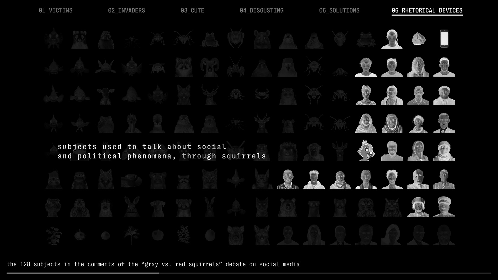
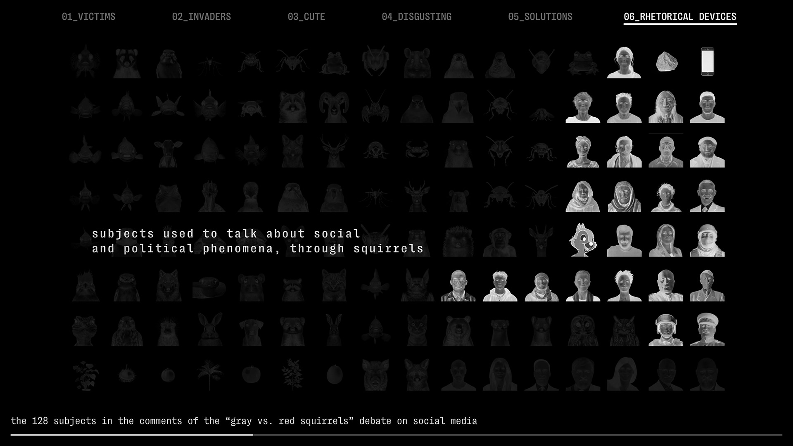

About
The project, presented at the exhibition "Liked, trapped, shared -
Digital encounters with biodiversity" at MEET (MI), explores the
online debate on the impact of North American grey squirrels on
Italy's native red squirrels.
Analyzing 1,117 comments from various social media platforms, it
found that 359 comments addressed broader issues beyond squirrels,
showing the wider ecological and social implications of invasive
species.
To visualize this complexity, 128 subjects from the analysis were
turned into AI-generated images and arranged in a grid for a video.
The result shows how diverse user perspectives shape the discussion
in unexpected ways, revealing the link between ecology, social
perceptions and digital discourse.

 
